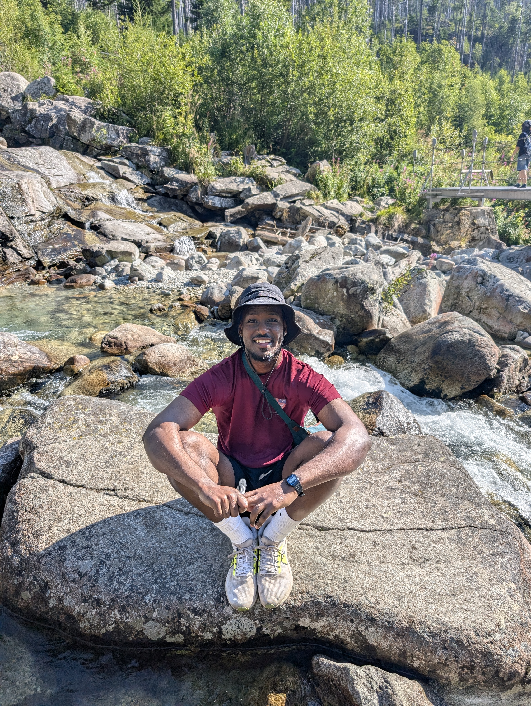

Hi, I'm Ermeyas Girma, currently working at Roku as a Senior Software Engineer, based in London.
I previously lived in York for 3 months, where I worked at Rapita Systems as a software engineer intern. During which I spent my time developing a Perl-based compiler to provide software verification for embedded aerospace systems used in flight-critical software for companies such as Rolls-Royce and Airbus.
Before this, I studied at Corpus Christi College at the University of Cambridge, where I received a bachelor's in Computer Science.
I enjoy hiking, lifting weights, playing chess, travelling, reading fantasy books and working on fun coding projects.